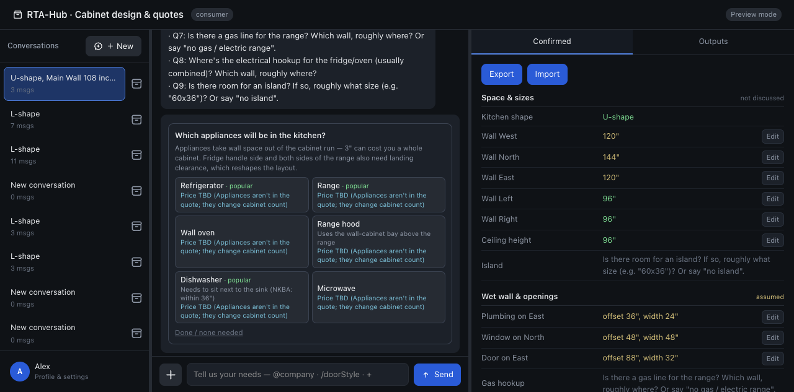
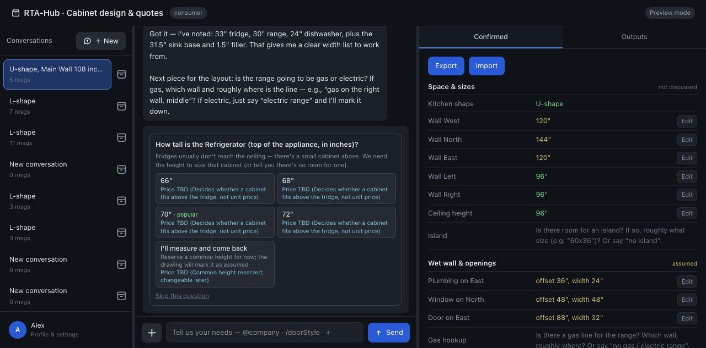
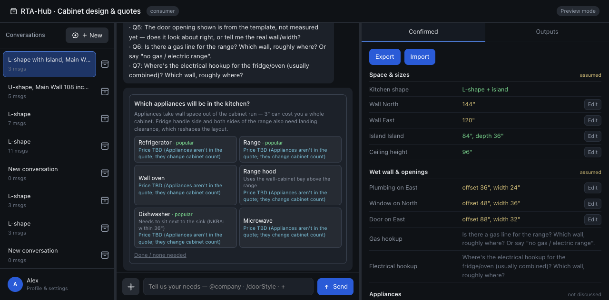
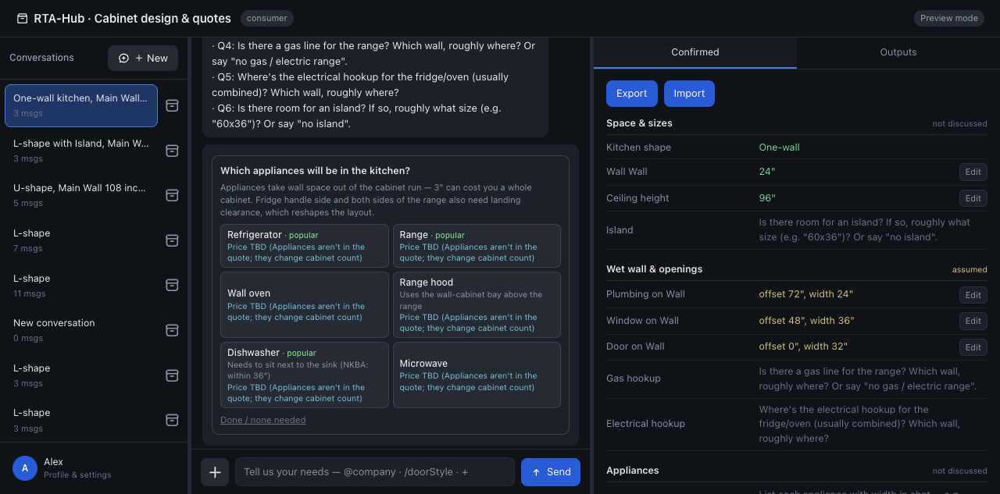

🔍 RTA-Hub 全面测试报告
📑 目录
📊 测试概览
🧪 测试场景
测试目标： 验证系统对标准L型厨房的基本识别和尺寸提取能力
用户输入： "L-shape" (仅输入布局形状)
测试流程：
- 用户输入 "L-shape"
- 系统应用 "floorplan-minimal" 模板
- 用户选择家电 (Refrigerator, Range, Dishwasher, Hood)
- 用户回答燃气问题 "no gas / electric range"
- 用户输入冰箱尺寸 "36" French Door Refrigerator"
发现的问题：
- BUG-001 (Critical): 模板假设被当作用户输入 - 系统显示 Wall North=144", Wall East=120", Ceiling=96" 但用户从未提供这些值
- BUG-002 (High): 家电尺寸自动假设 - 用户未提供尺寸时系统假设家电宽度
- BUG-003 (Medium): 重复提问 - 冰箱尺寸在多轮对话中被多次询问
截图：


测试目标： 验证系统正确处理用户提供的精确尺寸，而非使用模板值
用户输入： "U-shape, Main Wall 108 inches (9 ft), Left Wall 101 inches, Right Wall 96 inches, Ceiling Height 90 inches"
预期行为：
系统应使用用户提供的尺寸：Main=108", Left=101", Right=96", Ceiling=90"
实际行为：
系统应用模板值：West=120", North=144", East=120", Ceiling=96"
发现的问题：
- BUG-004 (Critical): 用户输入被模板覆盖 - 用户提供精确尺寸但系统使用模板值
- BUG-004 (High): 非标尺寸未识别 - "31.5" Sink Base" 和 "1.5" Filler" 完全未被识别
截图：


测试目标： 验证系统对复杂布局和特殊组件的识别能力
用户输入： "L-shape with Island, Main Wall 180 inches, Side Wall 144 inches, Ceiling Height 108 inches, Island 84" x 36", need Tall Pantry Cabinet 90", Crown Molding 3.5""
发现的问题：
- BUG-005 (High): 复杂组件未识别 - Tall Pantry Cabinet 90", Crown Molding 3.5" 完全未被提取
- BUG-001 复现: 用户输入的墙长/层高被模板覆盖
截图：

测试目标： 验证系统对极端输入的处理能力和边界条件
测试子项：
| 测试项 | 用户输入 | 预期行为 | 实际行为 | 结果 |
|---|---|---|---|---|
| 极小尺寸 | Main Wall 24 inches | 提示尺寸过小 | 接受并继续 | ❌ BUG-006 |
| 负数输入 | Main Wall = -50 inches | 拒绝负数 | 忽略/无响应 | ❌ BUG-006 |
| 空间冲突 | Side Wall 60", 家电总宽90" | 警告空间不足 | 仅在特定条件下提示 | ❌ BUG-007 |
| Off-topic | "What colors do you have?" | 回答问题或说明范围 | 忽略并转移话题 | ❌ BUG-008 |
截图：

测试目标： 验证系统从户型图图像中提取尺寸信息的能力
测试1: "Analyze this floor plan" (英文)
结果： ❌ 完全失败 - 系统没有提取任何信息，所有字段为空
测试2: "帮我看看这个厨房怎么设计？" (中文)
结果： ⚠️ 部分成功 - 提取到墙长 (North=137", East=120", Island=120")，但仍需用户回答4个问题
发现的问题：
- BUG-009 (Critical): 户型图识别完全失效 - 英文输入的户型图无法提取任何信息
- 中文户型图识别部分成功但不稳定
🐛 发现的问题详情
场景： 场景一、二、三
问题描述： 用户仅输入布局类型（如"L-shape"），系统直接应用模板假设值（Wall North=144", Wall East=120", Ceiling=96"），并将这些值显示在Confirmation Panel中，仿佛是用户已确认的信息。
用户实际输入： 仅 "L-shape"
系统显示： Wall North: 144" (assumed), Wall East: 120" (assumed), Ceiling height: 96" (assumed)
影响： 用户可能误以为这些值是他们提供的，造成信息误导
建议修复：
- 模板假设值应明确标记为"待确认"而非"已确认"
- AI应明确告知用户"我使用了标准模板值，请确认是否符合您的实际尺寸"
- 不应在用户未确认的情况下将假设值放入confirmed状态
场景： 场景一
问题描述： 用户选择家电类型后，系统自动假设家电尺寸（如36" refrigerator, 30" range），而非等待用户输入具体尺寸。
建议修复： 用户选择家电类型后，应主动询问具体尺寸，而非自动假设。
场景： 场景一
问题描述： 用户已提供冰箱尺寸（36" French Door Refrigerator），但在后续对话中AI再次询问冰箱尺寸。
建议修复： 建立信息状态追踪，已确认的信息不应重复询问。
场景： 场景二
问题描述： 用户提供了精确的墙长尺寸（Main Wall=108", Left Wall=101", Right Wall=96"），但系统应用了模板值（West=120", North=144", East=120"）。
用户输入： "U-shape, Main Wall 108 inches, Left Wall 101 inches, Right Wall 96 inches"
系统应用： West=120", North=144", East=120" (模板值)
额外问题： 用户输入的 "31.5" Sink Base" 和 "1.5" Filler" 完全未被识别。
建议修复：
- 用户明确提供尺寸时，应优先使用用户输入而非模板
- 扩展非标组件识别能力（Sink Base, Filler等）
场景： 场景三
问题描述： 用户输入 "Tall Pantry Cabinet 90"", "Crown Molding 3.5"" 等复杂组件，但系统未能提取这些信息。
建议修复： 扩展组件识别范围，包括但不限于：Tall Pantry Cabinet, Crown Molding, filler panels, spice pull-out, etc.
场景： 场景四
问题描述： 用户输入 "Main Wall 24 inches"（极小尺寸）或 "Main Wall = -50 inches"（负数），系统未进行有效性验证，直接接受。
建议修复：
- 添加尺寸范围验证（最小30", 最大300"）
- 拒绝负数和非数字输入
- 提示用户输入合理范围
场景： 场景四
问题描述： 用户输入 "Side Wall 60 inches, want 36" Refrigerator + 30" Range + 24" Dishwasher"，家电总宽90" > 墙长60"，但系统未及时警告。
影响： 用户可能设计出无法实现的厨房布局
建议修复：
- 实时计算家电总宽度
- 当家电总宽 > 墙长时立即警告
- 考虑门窗开口对可用空间的影响
场景： 场景四
问题描述： 用户问 "What cabinet colors do you have?" 和 "Do you offer installation in Surrey?"，AI回答 "Got it — province" 并错误地假设了省份。
额外问题： Province 从 Ontario 变成了 British Columbia，状态管理混乱。
建议修复：
- 建立Off-topic识别和优雅拒绝机制
- 不应在处理Off-topic时修改其他状态
- 对于非厨房设计问题，明确告知用户服务范围
场景： 户型图测试
问题描述： 用户上传户型图并输入 "Analyze this floor plan"，但系统未能提取任何尺寸信息，所有Confirmation Panel字段为空。
测试1结果： 英文输入 - 完全失败，无任何信息提取
测试2结果： 中文输入 - 部分成功（提取了墙长，但仍有4个问题需要用户回答）
建议修复：
- 检查视觉模型调用是否正常
- 增强户型图OCR/识别能力
- 确保英文和中文提示词都能触发图像识别
- 添加更多户型图测试用例验证
🔧 修复建议优先级
P0 - 立即修复 (Critical)
- BUG-001 模板假设 - 明确区分用户输入和模板假设值
- BUG-004 用户输入被覆盖 - 优先使用用户提供的尺寸
- BUG-007 空间冲突检测 - 添加实时空间验证
- BUG-008 状态管理 - 修复Off-topic处理和状态混乱
- BUG-009 户型图识别 - 修复图像识别功能
P1 - 高优先级 (High)
- BUG-002 家电尺寸假设 - 询问尺寸而非假设
- BUG-005 复杂组件 - 扩展组件识别范围
- BUG-006 输入验证 - 添加尺寸范围检查
P2 - 中优先级 (Medium)
- BUG-003 重复提问 - 实现信息状态追踪
📁 测试文件位置
所有测试文件保存在: ~/temp/test/RTA-Hub-Test/
Scenario-1/- 场景一测试文件Scenario-2/- 场景二测试文件Scenario-3/- 场景三测试文件Scenario-4/- 场景四测试文件Floorplan-1/- 户型图测试1Floorplan-2/- 户型图测试2bugs/- 独立BUG报告文件